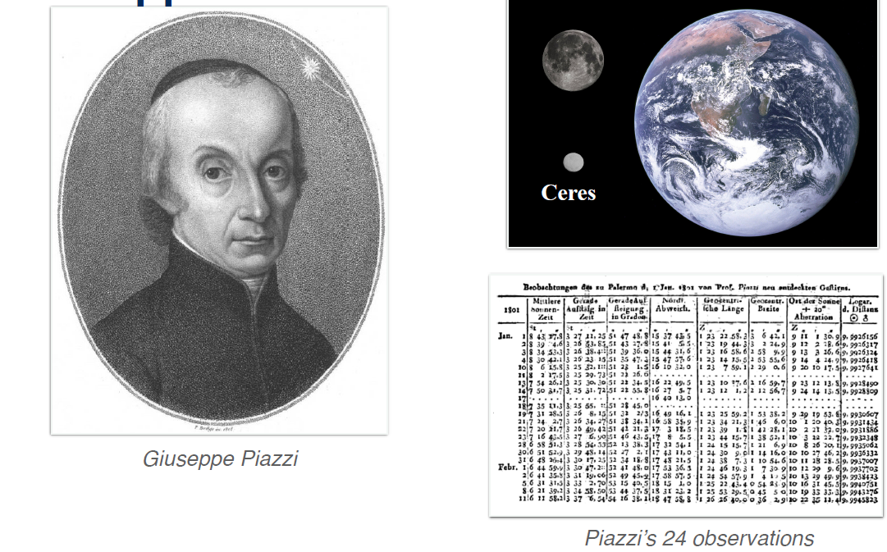
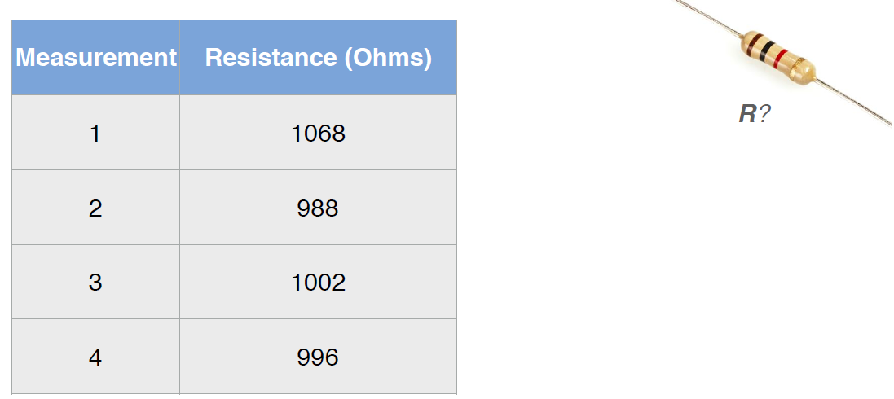
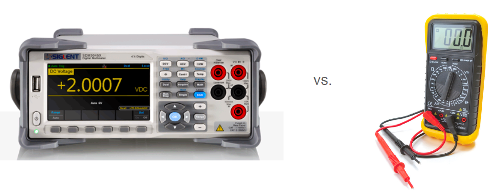
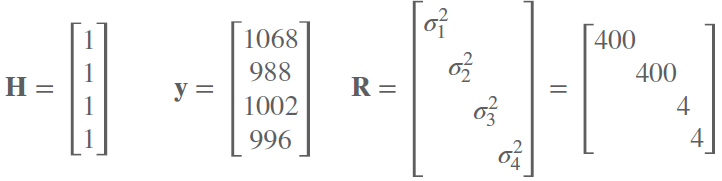
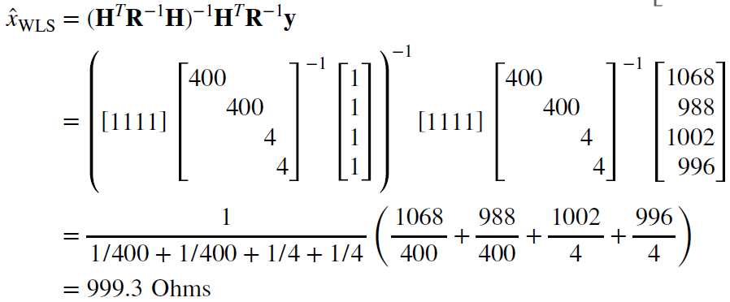
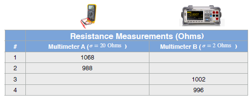
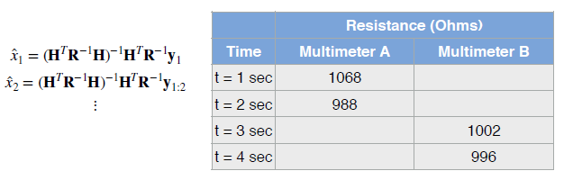
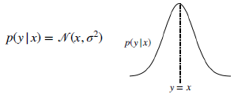

Module 1: Least Squares
The method of least squares, developed by Carl Friedrich Gauss in 1795, is a well known technique for estimating parameter values from data. This module provides a review of least squares, for the cases of unweighted and weighted observations. There is a deep connection between least squares and maximum likelihood estimators (when the observations are considered to be Gaussian random variables) and this connection is established and explained. Finally, the module develops a technique to transform the traditional 'batch' least squares estimator to a recursive form, suitable for online, real-time estimation applications.
学习目标
- Understand the squared error optimization criterion and its use
- Explain how least squares is employed in parameter estimation problems
- Apply the unweighted and weighted least squares methods to parameter estimation
- Apply a recursive version of least squares to update parameter estimates as new measurements arrive
- Explain how Jacobian matrices(雅尔比矩阵) are used
Lesson 1 (Part 1): Squared Error Criterion and the Method of Least Squares
平方误差准则和最小二乘法
Hello, and welcome to course two of the self-driving car specialization. In this course, we'll cover state estimation with a focus on localization. Let's first begin by defining a few key terms .
Localization is the method by which we determine the position and orientation of a vehicle within the world. As you can probably imagine, accurate localization is a key component of any self-driving car software stack. If we want to drive autonomously, we certainly need to know where we are.
To accomplish this, we can use state estimation. This is the process of computing a physical quantity like position from a set of measurements. Since any real-world measurements will be imprecise, we will develop methods that try to find the best or optimal value given some assumptions about our sensors and the external world.
Related to state estimation is the idea of parameter estimation. Unlike a state, which we will define as a physical quantity that changes over time, a parameter is constant over time. Position and orientation are states of a moving vehicle, while the resistance of a particular resistor in the electrical sub-system of a vehicle would be a parameter.
1. Overview
- The history of the method of least squares
- Ordinary and weighted least squares
- Recursive least squares
- Maximum likelihood and the method of least squares
In the first module or week one of the course, we will cover a common technique in state estimation, the method of least squares. By the end of this week, you'll know a little bit about the history of least squares and you'll learn about the method of ordinary least squares and its cousin, the method of weighted least squares. Then, we'll cover the method of recursive least squares and finally, discuss the link between least squares and the maximum likelihood estimation technique.
In the first lesson of this module, we'll introduce the method of least squares and something called the squared error criterion. By the end of the video, you'll be able to describe how the method of least squares was first used by Carl Friedrich Gauss in the discovery of the planetoid Ceres. Describe the least error criterion and how it's used in estimating the best parameters. Derive the necessary normal equations that we'll need to solve to use the method. Let's begin.
2. History
The method of least squares dates to the late 18th century well before anyone had considered the concept of automobiles. On January 1st, 1801, an Italian priest and astronomer Giuseppe Piazzi discovered a new celestial object in the night sky. The asteroid or planetoid now called Ceres. You can see it here next to the moon and to the earth.

Piazzi made 24 telescope observations of this new object over 40 days before it was lost in the glare of the sun. Since Ceres is only about 900 kilometers in diameter, finding it again it was extremely challenging. This meant that other astronomers could not confirm Piazzi's discovery. To help locate Ceres again, Carl Friedrich Gauss who has been called the prince of mathematicians for his prodigious contributions to many different fields, used a method of least squares to accurately estimate Ceres orbital parameters based on Piazza's published measurements.

With Gauss's calculations in hand, astronomers were successfully able to rediscover Ceres nearly a year after Piazzi had made his first observations. Although he published the method in 1809, Gauss claimed that he developed least squares in 1795, predating Lesion's work.
Gauss summarized the approach as follows:
"The most probable value of the unknown quantities will be that in which the sum of the squares of the differences between the actually observed and the computed values multiplied by numbers that measure the degree of precision is a minimum."
3. Example
以电阻值测量为例，说明测量误差的存在。应用最小二乘法，进行阻值的估计
To illustrate how this works, let's take a simple example. Suppose you are trying to measure the value in ohms of a simple resistor within the drive system of an autonomous vehicle.
To do this, you grab a relatively inexpensive multimeter that's lying around your lab. Now, let's say you collect these four separate measurements, sequentially.

If you've studied electrical circuits before, you'll probably recall that the type of carbon film resistors shown here is color-coded according to its rated resistance value. This resistor is rated at one kilo ohm. However, due to a number of factors, the true resistance can vary from the rated value. In this case, the resistor has a gold band which indicates that it can vary by as much as five percent. Furthermore, let's imagine that our multimeter is particularly poor and that the person making the measurements is not particularly careful.For now, it's sufficient to treat this noise as equivalent to a general error but we'll come back to ways we can interpret the noise from a probabilistic perspective later in the module.
For each of the four measurements, we define a scalar noise term that is independent of the other noise terms. Statistically, we would say in this case that the noise is independent and identically distributed or IID, and we'll discuss this more later. Next, we define the error between each measurement and the actual value of our resistance x.

But remember, we don't yet know what x is. To find x, we square these errors to arrive at an equation that is a function of our measurements and the unknown resistance that we're looking for.

With these errors defined, the method of least squares says that the resistance value we are looking for, that is the best estimate of x is one which minimizes the squared error criterion, also sometimes called the squared error cost function or loss function.
$$ \hat{x}{\mathrm{LS}}=\operatorname{argmin}{x}\left(e{1}^{2}+e{2}^{2}+e{3}^{2}+e{4}^{2}\right)=\mathscr{L}_{\mathrm{LS}}(x)
$$ To minimize the squared error criterion, we'll rewrite our errors in matrix notation.
$$ \mathbf{e}=\left[ \begin{array}{l}{e{1}} \ {e{2}} \ {e{3}} \ {e{4}}\end{array}\right]=\mathbf{y}-\mathbf{H} x=\left[ \begin{array}{l}{y{1}} \ {y{2}} \ {y{3}} \ {y{4}}\end{array}\right]-\left[ \begin{array}{l}{1} \ {1} \ {1} \ {1}\end{array}\right] x
$$
H : 雅尔比矩阵
This will be especially helpful when we have to deal with hundreds or even thousands of measurements. We'll define an error vector identified as $\mathbf{e}$, that is a function of our observations stacked into a vector y and a matrix $\mathbf{H}$ called the Jacobian.
Finally, our true resistance $x$. $\mathbf{H}$ has the dimensions m by n, where m is the number of measurements and n is the number of unknowns or parameters that we wish to estimate. In general, this will be a rectangular matrix which we can write down quite easily in this linear case. It will require some more mathematical effort to compute when we discuss non-linear estimation in an upcoming lesson. Note here that x is a single scaler. We'll see later that it can be a vector comprising multiple unknowns.
With these definitions in mind, we can convert our squared error criterion to vector notation as follows.
$$ \begin{aligned} \mathscr{L}{\mathrm{LS}}(x)=e{1}^{2}+e{2}^{2}+e{3}^{2}+e_{4}^{2} &=\mathbf{e}^{T} \mathbf{e} \ &=(\mathbf{y}-\mathbf{H} x)^{T}(\mathbf{y}-\mathbf{H} x) \ &=\mathbf{y}^{T} \mathbf{y}-x^{T} \mathbf{H}^{T} \mathbf{y}-\mathbf{y}^{T} \mathbf{H} x+x^{T} \mathbf{H}^{T} \mathbf{H} x \end{aligned}
$$
4. Minimizing the Squared Error Criterion
Expanding out the brackets, we arrive at this somewhat intimidating expression.
$$ \mathscr{L}(x)=\mathbf{e}^{T} \mathbf{e}=\mathbf{y}^{T} \mathbf{y}-x^{T} \mathbf{H}^{T} \mathbf{y}-\mathbf{y}^{T} \mathbf{H} x+x^{T} \mathbf{H}^{T} \mathbf{H} x
$$ So, what now? Well, remember that we need to minimize the squared error with respect to our true resistance x. From calculus, we know that we can do this by taking a derivative of the error function with respect to the unknown x and setting the derivative to zero. Let's do exactly that. We'll have to use some standard matrix expressions.
$$ \begin{array}{r}{\left.\frac{\partial \mathscr{L}}{\partial x}\right|_{x=\hat{x}}=-\mathbf{y}^{T} \mathbf{H}-\mathbf{y}^{T} \mathbf{H}+2 \hat{x}^{T} \mathbf{H}^{T} \mathbf{H}=0} \ {-2 \mathbf{y}^{T} \mathbf{H}+2 \hat{x}^{T} \mathbf{H}^{T} \mathbf{H}=0}\end{array}
$$ Re-arranging, we arrive at what are called the normal equations, which can be written as a single matrix formula.
$$ \hat{x}_{\mathrm{LS}}=\left(\mathbf{H}^{T} \mathbf{H}\right)^{-1} \mathbf{H}^{T} \mathbf{y}
$$ We can solve these to find x-hat, the resistance which minimizes our squared error criterion. This expression has a unique solution if and only if $\mathbf{H}^{T} \mathbf{H}$ is not singular. In other words, if the matrix has an inverse. If we have m measurements and n unknown parameters, H transpose H will be n by n.
$$ \mathbf{H} \in \mathbb{R}^{m \times n} \quad \mathbf{H}^{T} \mathbf{H} \in \mathbb{R}^{n \times n}
$$
矩阵的可逆问题
The matrix will be invertible if and only if m is greater than or equal to n. So, we need at least as many measurements as unknowns in order to derive the least squares solution. This will usually not be a problem. In fact, we'll often face the challenge of dealing with too many measurements. But nevertheless, you should keep this limitation in mind when working with the formula.
Coming back to our particular resistance problem, let's fill out our variables.

Once we have these quantities, it's just a matter of plug and chug. The expression is quite straightforward to code up as you'll see in your module assignment.
此处表达式简化为四次测量的算术平均值
Note here that the expression simplifies to the arithmetic mean of our four measurements.

Perhaps this is something you thought of doing all along. Now, we have another justification for using the arithmetic mean, it minimizes the simple least squares criterion. Finally, we should note two important assumptions that we've made.
5. Method of Least Squares | Assumptions
First, we've assumed that our measurement model is linear. This is a very important assumption that is often broken in complex systems. We'll discuss non-linear measurement models in later lessons. Second, we've assumed that all of our measurements have an equal weight in our error equation. To put this another way, we've assumed that we care about each of our measurements equally.
6. Summary
To summarize, in this video, you've learned that the method of least squares was pioneered by Carl Friedrich Gauss who used it to accurately predict the orbit of a new planet like object called Ceres. You saw how we can minimize the least squares criterion to solve for parameter values of interest. We noted that the method of ordinary least squares assumes a linear measurement model and can't handle measurements of unequal importance. In the next video, we'll extend the method of least squares to the method of weighted least squares, which can account for measurements of varying importance.
Lesson 1 (Part 2): Squared Error Criterion and the Method of Least Squares
- Derive the weighted least squares criterion given varying measurement noise variance
- Compare weighted least squares to ordinary least squares
In the last video, we saw how we could use the method of least squares to solve for a more correct value of resistance given a set of noisy measurements. In this video, we'll ask the question, what can we do if we suspect that some of our measurements are of better quality than others? By the end of this video, you'll be able to derive and minimize the weighted least squares criterion that will let us handle measurements of different quality and compare this new method to the method of regular or ordinary least squares that we discussed in the previous video. Let's begin.
1. Method of Weighted Least Squares
加权最小二乘估计
One reason we may want to trust certain measurements more than others is that they may come from a better sensor. For example, a number of our resistance measurements could have come from a much more expensive multi-meter than the others. Further, from now on, we'll also drop the assumption that we're only estimating one parameter and derive the more general normal equations.

This will allow us to formulate a way to estimate multiple parameters at one time. For example, if we wanted to estimate several resistance values at once.
Let's begin by using the following general notation. We'll have a set of m measurements that are related to a set of n unknown parameters through a linear model.Recall that H is rj cobian matrix whose form and entries will depend on the particular problem at hand.
$$ \left[ \begin{array}{c}{y{1}} \ {\vdots} \ {y{m}}\end{array}\right]=\mathbf{H} \left[ \begin{array}{c}{x{1}} \ {\vdots} \ {x{n}}\end{array}\right]+\left[ \begin{array}{c}{v{1}} \ {\vdots} \ {v{m}}\end{array}\right]\ \ y = Hx + v
$$ One way to interpret the ordinary method of least squares is to say that we are implicitly assuming that each noise term $v_i$ is an independent random variable across measurements and has an equal variance or standard deviation if you prefer, IID as we mentioned in the previous video.
$$ \mathbb{E}\left[v_{i}^{2}\right]=\sigma^{2} \quad(i=1, \ldots, m)\quad \quad \mathbf{R}=\mathbb{E}\left[\mathbf{v} \mathbf{v}^{T}\right]=\left[ \begin{array}{cc}{\sigma^{2}} & {0} \ {0} & {\sigma^{2}}\end{array}\right]
$$ If we instead assume that each noise term has a different variance, we can define our noise covariance as follows.
$$ \mathbb{E}\left[v_{i}^{2}\right]=\sigma_i^{2} \quad(i=1, \ldots, m)\quad \quad \mathbf{R}=\mathbb{E}\left[\mathbf{v} \mathbf{v}^{T}\right]=\left[ \begin{array}{cc}{\sigma_1^{2}} & {0} \ {0} & {\sigma_m^{2}}\end{array}\right]
$$ With this definition, we can define a weighted least squares criterion.
$$ \begin{aligned} \mathscr{L}{\mathrm{WLS}}(\mathbf{x}) &=\mathbf{e}^{T} \mathbf{R}^{-1} \mathbf{e} \ &=\frac{e{1}^{2}}{\sigma{1}^{2}}+\frac{e{2}^{2}}{\sigma{2}^{2}}+\ldots+\frac{e{m}^{2}}{\sigma{m}^{2}} \end{aligned} \quad \quad where \quad \quad \left[ \begin{array}{c}{e{1}} \ {\vdots} \ {e{m}}\end{array}\right]=\mathbf{e}=\left[ \begin{array}{c}{y{1}} \ {\vdots} \ {y{m}}\end{array}\right]-\mathbf{H} \left[ \begin{array}{c}{x{1}} \ {\vdots} \ {x_{n}}\end{array}\right]
$$ By expanding this expression, we can see why we call this weighted least squares. Each squared error term is now weighted by the inverse of the variance associated with the corresponding measurement. In other words, the lower the variance of the noise, the more strongly it's associated error term will be weighted in the loss function. We care more about errors which come from low noise measurements since those should tell us a lot about the true values of our unknown parameters.
2. Re-deriving Regular Least Squares
Before we see how we can minimize this new weighted criterion, let's look at what happens if we set all of the noise standard deviations to the same value sigma.
$$ \begin{aligned} \mathscr{L}{\mathrm{WLS}}(\mathbf{x}) &=\frac{e{1}^{2}}{\sigma^{2}}+\frac{e{2}^{2}}{\sigma^{2}}+\ldots+\frac{e{m}^{2}}{\sigma^{2}} \ &=\frac{1}{\sigma^{2}}\left(e{1}^{2}+\ldots+e{m}^{2}\right) \end{aligned}
$$ In this case, we can factor out the variance in the denominator. Since the sigma squared term is constant it will not affect the minimization. This means that in the case of equal variances, the same parameters that minimize our weighted least squares criterion will also minimize our ordinary least squares criterion as we should expect.
$$ \sigma{1}^{2}=\sigma{2}^{2}=\ldots \sigma{m}^{2}=\sigma^{2} \rightarrow \quad \hat{\mathbf{x}}{\mathrm{WLS}}=\hat{\mathbf{x}}{\mathrm{LS}}=\operatorname{argmin}{\mathbf{x}} \mathscr{L}{\mathrm{LS}}(\mathbf{x})=\arg \min {\mathbf{x}} \mathscr{L}_{\mathrm{WLS}}(\mathbf{x})
$$
3. Minimizing the Weighted Least Squares Criterion
Returning to our weighted least squares criterion, we approach it's minimization the same way as before, we take a derivative.
$$ \begin{aligned} \mathscr{L}_{\mathrm{WLS}}(\mathbf{x}) &=\mathbf{e}^{T} \mathbf{R}^{-1} \mathbf{e} \ &=(\mathbf{y}-\mathbf{H} \mathbf{x})^{T} \mathbf{R}^{-1}(\mathbf{y}-\mathbf{H} \mathbf{x}) \end{aligned}
$$ In the general case where we have n unknown parameters in our bold vector x, this derivative will actually be a gradient.
$$ \hat{\mathbf{x}}=\operatorname{argmin}{\mathbf{x}} \mathscr{L}(\mathbf{x}) \quad \longrightarrow \quad\left.\frac{\partial \mathscr{L}}{\partial \mathbf{x}}\right|{\mathbf{x}=\hat{\mathbf{x}}}=\mathbf{0}=-\mathbf{y}^{T} \mathbf{R}^{-1} \mathbf{H}+\hat{\mathbf{x}}^{T} \mathbf{H}^{T} \mathbf{R}^{-1} \mathbf{H}
$$ Setting the gradient of the zero vector, we then solve for our best or optimal parameter vector x hat.
$$ \mathbf{H}^{T} \mathbf{R}^{-1} \mathbf{H} \hat{\mathbf{x}}_{\mathrm{WLS}}=\mathbf{H}^{T} \mathbf{R}^{-1} \mathbf{y}
$$ This leads to another set of normal equations this time called the weighted normal equations.
4. Method of Weighted Least Squares
Let's take a look at an example of how this method of weighted least squares works. We'll take the same data we collected before, but now assume that the last two measurements were actually taken with a multimeter that had a much smaller noise variance.

Be careful here, the numbers we list are standard deviations which is why they have the units of ohms. In order to use them in our formulation, we will need to square them to get the variances.

Defining our variables and then evaluating our weighted least squares solution, we can see that the final resistance value we get is much closer to what the more accurate multimeter measured as expected.Here's a quick summary of the methods of least squares and weighted least squares.

5. Ordinary versus | Weighted Least Squares
By using weighted least squares, we can vary the importance of each measurement to the final estimate.

It's important to be comfortable working with different measurement variances and also with measurements that are sometimes correlated. A self-driving car will have a number of different and complex sensors on board and we need to make sure that we model our error sources correctly. So, there you have it, weighted least squares.
6. Summary
- Measurements can come from sensors that have different noisy characteristics
- Weighted least squares lets us weight each measurement according to noise variance
In this video, we discussed how certain measurements may come from sensors with better noise characteristics and should therefore be weighted more heavily in our least squares criterion. Using this intuition, we derived the weighted least squares criterion and the associated weighted normal equations that can be solved to yield the weighted least squares estimate of a set of constant parameters. In the next video, we'll look at modifying the method of least squares to work recursively, that is to compute an optimal estimate based on a stream of measurements without having to acquire the entire set beforehand. This will be very important when we look at state estimation, or the problem of estimating quantities that change continuously over time.
Lesson 2: Recursive Least Squares
递归最小二乘法
In this lesson, we'll discuss recursive least squares, a technique to compute least squares on the fly. By the end of the lesson, you'll be able to
Extend the batch least squares solution to one that works recursively.
Use this method of recursive least squares to keep a running estimate of the least squares solution as new measurements stream in.
1. Batch Least Squares
Let's begin. We've already explored the problem of computing a value for some unknown but constant parameter from a set of measurements.

'Batch Solution':
$$ \hat{x}_{\mathrm{WLS}}=\left(\mathbf{H}^{T} \mathbf{R}^{-1} \mathbf{H}\right)^{-1} \mathbf{H}^{T} \mathbf{R}^{-1} \mathbf{y}
$$ One of our assumptions was that we had all of the data at hand. That is, we assumed that we collected a batch of measurements and we wanted to use those measurements to compute our estimated quantities of interest. This is sometimes a completely reasonable assumption. What can we do if instead we have a stream of data? Do we need to recompute the least squares solution every time we receive a new measurement?
For example, let's say we have a multimeter that can measure resistance 10 times per second.

Ideally, we'd like to use as many measurements as possible to get an accurate estimate of the resistance. If we use the method of least squares however, the amount of computational resources we will need to solve our normal equations will grow with the measurement vector size. Alternatively, we can try and use a recursive method one that keeps a running estimate of the optimal parameter for all of the measurements that we've collected up to the previous time step and then updates that estimate given the measurement at the current time step.
2. Linear Recursive Estimator
To do this we use a recursive algorithm, incrementally updating our estimate as we go along. Let us assume that we have our best optimal estimate at time k minus 1.

At time k we receive a new measurement that will assume follows linear measurement model with additive Gaussian noise. Our goal is to compute an updated optimal estimate at time k, given our measurement and the previous estimate.
A linear recursive estimate is given by the following expression.
$$ \hat{\mathbf{x}}{k}=\hat{\mathbf{x}}{k-1}+\mathbf{K}{k}\left(\mathbf{y}{k}-\mathbf{H}{k} \hat{\mathbf{x}}{k-1}\right)
$$ Here k is called an estimator gain matrix. The term in brackets is called the innovation. It quantifies how well our current measurement matches our previous best estimate. Even without knowing the expression for k. We can already see how this recursive structure works. Our new estimate is simply the sum of the old estimate and corrective term based on the difference between what we expected the measurement to be and what we actually measured. In fact, if the innovation were equal to zero, we would not change our old estimate at all.
3. Recursive Least Squares
Now, how do we compute k? Well, for that, we'll need to use a recursive least squares criterion and some matrix calculus as before. This time the math is significantly more involved, so, only work through a few steps and let the more curious learners refer to the textbook for more information. Our least squares criterion and in this case will be the expected value of r squared errors for our estimate at time k.
$$ \begin{aligned} \mathscr{L}{\mathrm{RLS}}&=\mathbb{E}\left[\left(x{k}-\hat{x}{k}\right)^{2}\right] \ &=\sigma{k}^{2} \end{aligned}
$$ For a single scalar parameter like resistance, this amounts to minimizing the estimator state variance $\sigma_{k}^{2}$. For multiple unknown parameters, this is equivalent to minimizing the trace of our state covariance matrix at time t.
$$ \begin{aligned} \mathscr{L}{\mathrm{RLS}} &=\mathbb{E}\left[x{1 k}-\hat{x}{1 k}\right)^{2}+\ldots+\left(x{n k}-\hat{x}{n k}\right)^{2} ] \ &=\operatorname{Trace}\left(\mathbf{P}{k}\right) \end{aligned}
$$ This is exactly like our former least squares criterion except now we have to talk about expectations. Instead of minimizing the error directly, we minimize its expected value which is actually the estimator variance. The lower the variance, the more we are certain of our estimate.
It turns out that we can formulate a recursive definition for this state covariance matrix P_k.
$$ \mathbf{P}{k}=\left(\mathbf{1}-\mathbf{K}{k} \mathbf{H}{k}\right) \mathbf{P}{k-1}\left(\mathbf{1}-\mathbf{K}{k} \mathbf{H}{k}\right)^{T}+\mathbf{K}{k} \mathbf{R}{k} \mathbf{K}_{k}^{T}
$$ By using matrix calculus and taking derivatives, we can show that this criterion is minimized when k has the following value. The full derivation is a bit beyond the scope of our course but can be found in any standard estimation text.
$$ \mathbf{K}{k}=\mathbf{P}{k-1} \mathbf{H}{k}^{T}\left(\mathbf{H}{k} \mathbf{P}{k-1} \mathbf{H}{k}^{T}+\mathbf{R}_{k}\right)^{-1}
$$ Finally, by using this formulation, we can also rewrite our recursive definition for P_k into something much simpler. Take a second to think about this equation. The larger our gain matrix k, the smaller our new estimator covariance will be. Our covariance 'shrinks' with each measurement.
$$ \begin{aligned} \mathbf{P}{k} &=\mathbf{P}{k-1}-\mathbf{K}{k} \mathbf{H}{k} \mathbf{P}{k-1} \ &=\left(\mathbf{1}-\mathbf{K}{k} \mathbf{H}{k}\right) \mathbf{P}{k-1} \end{aligned}
$$ Intuitively, you can think of this gain matrix as balancing the information we get from our prior estimate and the information we receive from our new measurement.
4. Recursive Least Squares | Algorithm
Putting everything together, our least squares algorithm looks like this. We initialize the algorithm with estimate of our unknown parameters and a corresponding covariance matrix.
$$ \begin{aligned} \hat{\mathbf{x}}{0} &=\mathbb{E}[\mathbf{x}] \ \mathbf{P}{0} &=\mathbb{E}\left[\left(\mathbf{x}-\hat{\mathbf{x}}{0}\right)\left(\mathbf{x}-\hat{\mathbf{x}}{0}\right)^{T}\right] \end{aligned}
$$ This initial guess could come from the first measurement we take and the covariance could come from technical specifications. Next, we set up our measurement model and pick values for our measurement covariance.
$$ \mathbf{y}{k}=\mathbf{H}{k} \mathbf{x}+\mathbf{v}_{k}
$$ Finally, every time a measurement is recorded, we compute the measurement gain and then use it to update our estimate of the parameters and our estimator covariance or uncertainty.
$$ \begin{aligned} \mathbf{K}{k} &=\mathbf{P}{k-1} \mathbf{H}{k}^{T}\left(\mathbf{H}{k} \mathbf{P}{k-1} \mathbf{H}{k}^{T}+\mathbf{R}{k}\right)^{-1} \ \hat{\mathbf{x}}{k} &=\hat{\mathbf{x}}{k-1}+\mathbf{K}{k}\left(\mathbf{y}{k}-\mathbf{H}{k} \hat{\mathbf{x}}{k-1}\right) \ \mathbf{P}{k} &=\left(\mathbf{1}-\mathbf{K}{k} \mathbf{H}{k}\right) \mathbf{P}_{k-1} \end{aligned}
$$ Every time we get a new measurement our parameter uncertainty shrinks. Why is recursive least squares an important algorithm? As we've seen, it enables us to minimize computational effort in our estimation process which is always a good thing. More importantly, recursive least squares forms the update step of the linear Kalman filter. We'll discuss this in more detail in the next module. In your upcoming graded assessment, you'll get some hands on experience using recursive least squares to determine a voltage value from a series of measurements.
5. Summary
- RLS produces a ‘running estimate’ of parameter(s) for a stream of measurements
- RLS is a linear recursive estimator that minimizes the (co)variance of the parameter(s) at the current time
To summarize, the recursive least squares algorithm lets us produce a running estimate of a parameter without having to have the entire batch of measurements at hand and recursive least squares is a recursive linear estimator that minimizes the variance of the parameters at the current time. In the next and final video of this module, we'll discuss why minimizing squared errors is a reasonable thing to do by connecting the method of least squares with another technique from statistics, maximum likelihood estimation.
Lesson 3: Least Squares and the Method of Maximum Likelihood
Welcome to the final lesson of module one. We'll finish off the module by discussing an important connection, that will help to provide further intuition for the method of least squares. Specifically, by the end of this lesson, you'll be able to
- State the connection between the method of least squares and maximum likelihood estimation with Gaussian random variables.
1. Revisiting the Least Squares Criterion
Let's begin by recalling the least squares criterion from the very first video in this module.
$$ \mathscr{L}{\mathrm{LS}}(x)=\left(y{1}-x\right)^{2}+\left(y{2}-x\right)^{2}+\ldots+\left(y{m}-x\right)^{2}
$$ We found the best estimates of some unknown, but constant parameters by determining the values that minimize the sum of squared errors based on our measurements. We've said that the optimal estimate , $\hat{x}$ ,is the one that minimizes this 'loss':
$$ \hat{x}{\mathrm{LS}}=\operatorname{argmin}{x} \mathscr{L}{\mathrm{LS}}(x)=\operatorname{argmin}{x}\left(e{1}^{2}+e{2}^{2}+\ldots+e_{m}^{2}\right)
$$ But we can ask, why squared errors? Why not cubed errors, or square root errors, or something else? This is actually a particularly deep question and there is a whole field of robust statistics dedicated to it. You can indeed use different error functions, but we'll go over two reasons why squared errors are attractive and relevant.
The first is simple. Squared errors allow us to solve for the optimal parameters with relatively straightforward algebra. If the measurement model is linear, minimizing the squared error criterion amounts to solving a linear system of equations. The second reason has to do with probability and a deep connection between least squares and maximum likelihood estimators under the assumption of Gaussian noise. As you may have guessed, this connection was first derived in a particular form by Gauss. So, it's no surprise that it involves Gaussian random variables or equivalently Gaussian noise.
2. The Method of Maximum Likelihood
最大似然估计，可参考博客
To understand this fundamental connection, let's first discuss maximum likelihood. We can ask which x makes our measurement most likely.Or,in other word,which x maximizes the conditional probability of y :
$$ \hat{x}=\operatorname{argmax}_{x} p(y | x)
$$ Instead of writing down a loss, we can approach the problem of optimal parameter estimation by asking, which parameters make our recorded measurements the most likely? To keep things simple, we'll stick to a single scalar parameter to build our intuition. For example, let's look again at measuring resistance.

Given what we know about probability, if we have four possible values for this unknown resistance parameter, capital X, small x sub A through small x sub D, and each gives rise to the following conditional probability on our measurement Y, which value would maximize the conditional likelihood given the measurement Y sub mes? That's right. X sub A. The highest probability density at the measured location is given by the green curve, which means that X sub A is our most likely parameter value given this measurement.
3. Measurement Model
Now, if we take our simple measurement model,
$$ y = x + v
$$ We can convert this into a conditional probability on our measurement , by assuming some probability density for v. For example, if
$$ v \sim \mathscr{N}\left(0, \sigma^{2}\right)
$$ Then:

The unknown parameter ,X, becomes the mean of this density and the variance is simply our noise variance.
4. Least Squares and Maximum Likelihood
Recall that the probability density of a Gaussian random variable is given by the following equation.
$$ \mathscr{N}\left(z ; \mu, \sigma^{2}\right)=\frac{1}{\sigma \sqrt{2 \pi}} e^{\frac{-(z-\mu)^{2}}{2 \sigma^{2}}}
$$ This means that we can express our measurement likelihood for a single measurement as follows.Our conditional measurement likelihood is
$$ \begin{aligned} p(y | x) &=\mathscr{N}\left(y ; x, \sigma^{2}\right) \ &=\frac{1}{\sqrt{2 \pi \sigma^{2}}} e^{\frac{-(y-x)^{2}}{2 \sigma^{2}}} \end{aligned}
$$ If we have multiple independent measurements, each with the same noise variance, we can simply take the product of multiple Gaussians, which results in another Gaussian.
$$ \begin{aligned} p(\mathbf{y} | x) & \propto \mathscr{N}\left(y{1} ; x, \sigma^{2}\right) \mathscr{N}\left(y{2} ; x, \sigma^{2}\right) \times \ldots \times \mathscr{N}\left(y{m} ; x, \sigma^{2}\right) \ &=\frac{1}{\sqrt{(2 \pi)^{m} \sigma^{2 m}}} \exp \left(\frac{-\sum{i=1}^{m}\left(y_{i}-x\right)^{2}}{2 \sigma^{2}}\right) \end{aligned}
$$ We can try to maximize this likelihood with respect to the mean parameter X half. The maximal likelihood estimate (MLE) is given by
$$ \hat{x}{\mathrm{MLE}}=\operatorname{argmax}{x} p(\mathbf{y} | x)
$$ To do this, we'll use a technique that's often used in optimization. Instead of maximizing the likelihood directly, we'll take it's logarithm and maximize that. The logarithm is monotonically increasing.
$$ \begin{aligned} \hat{x}{\mathrm{MLE}} &=\operatorname{argmax}{x} p(\mathbf{y} | x) \ &=\arg \max _{x} \log p(\mathbf{y} | x) \end{aligned}
$$ Since the likelihood will always be a positive number and because the logarithm is a monotonically increasing function, this will not affect the final result, which is very convenient. Once we apply the logarithm to this likelihood, we see that something pops out that looks a lot like the sum of squared errors.
$$ \log p(\mathbf{y} | x)=-\frac{1}{2 \sigma^{2}}\left(\left(y{1}-x\right)^{2}+\ldots+\left(y{m}-x\right)^{2}\right)+C
$$ The constant C in this expression refers to terms that are not a function of X and ones which we can safely ignore.
The last step is now to realize that the arg max of the function F is the same as the arg min of the negative of that function.

Using this fact, we can turn our likelihood maximization into a minimization of the sum of squared errors.The maximal likelihood problem can therefore be written as
$$ \begin{aligned} \hat{x}{\mathrm{MLE}} &=\operatorname{argmin}{x}-(\log p(\mathbf{y} | x)) \ &=\operatorname{argmin}{x} \frac{1}{2 \sigma^{2}}\left(\left(y{1}-x\right)^{2}+\ldots+\left(y_{m}-x\right)^{2}\right) \end{aligned}
$$ For that, minimizing the sum of squared errors is equivalent to maximizing the likelihood of a set of measurements, assuming that the measurements are corrupted by additive, independent, Gaussian noise that's of equal variance.
$$ \hat{x}{\mathrm{MLE}}=\arg \min {x} \frac{1}{2 \sigma^{2}}\left(\left(y{1}-x\right)^{2}+\ldots+\left(y{m}-x\right)^{2}\right)
$$ Furthermore, if we maintain the same assumptions, but change the variance of the Gaussian noise for each measurement, we can arrive at the same criterion as we saw in our weighted least squares video.
$$ \hat{x}{\mathrm{MHE}}=\operatorname{argmin}{x} \frac{1}{2}\left(\frac{\left(y{1}-x\right)^{2}}{\sigma{\mathrm{l}}^{2}}+\ldots+\frac{\left(y{m}-x\right)^{2}}{\sigma{m}^{2}}\right)
$$ So, in both cases,
$$ \hat{x}{\mathrm{MLE}}=\hat{x}{\mathrm{LS}}=\operatorname{argmin}{x} \mathscr{L}{\mathrm{LS}}(x)=\arg \min {x} \mathscr{L}{\mathrm{MLE}}(x)
$$ the maximum likelihood estimate, given additive Gaussian noise, is equivalent to the least squares or weighted least squares solutions we derived earlier.
5. The Central Limit Theorem
中心极限定理
So, why is this result so important? Our self-driving car will have to deal with many, many sources of error. Some of which are very difficult to model. However, the central limit theorem, tells us that when combining all of these errors together, they can reasonably be modeled by a single Gaussian error distribution.
Central Limit Theorem: When independent random variables are added, their normalized sum tends towards a normal distribution.
We would like to model our system probabilistically and yet maintain simplicity in calculations. If our errors are Gaussian, then the best maximum likelihood estimate of the parameters of interest, is exactly the least squares solution we're already familiar with.
So Why we use method of least squares?
- Central Limit Theorem : sum of different errors will tend be ‘Gaussian'-ish
- Least squares is equivalent to maximum likelihood under Gaussian noise
6. Least Squares | Some Caveats
注意异常值对最大似然算法或最小二乘的影响
Easy. To finish off, let's discuss one important caveat for this method. When we use the method of least squares, measurement outliers can have a significant effect on our final estimate. measurement outliers can have a significant effect on our final estimate. As a result, if there are some outliers in our measurement data, the method of maximum likelihood, and equivalently, the method of least squares, will put significant importance on these measurements.

So, the estimated value of our parameter will be pulled strongly by these outliers. Our optimal method will be skewed so that the outlying measurement is more likely. This can happen to many estimators using sensor data from a self-driving vehicle. Outliers might result from people walking in the middle of a Lidar scan, for example, or from a bad GPS signal. Consider our resistor example. With one outlying measurement that may come from a simple accident, the final estimate is pulled significantly away from that of the outlier free case.

We always want to be cognizant of outliers and try to quantify the error distribution whenever possible, before blindly applying maximum likelihood or least squares.
Now, that we've derived this connection between maximum likelihood and least squares, we're ready to extend our recursive least squares estimator to the full common filter, one of the most famous algorithms of the 20th century.
7. Summary
- LS and WLS produce the same estimates as maximum likelihood assuming Gaussian noise
- Central Limit Theorem states that complex errors will tend towards a Gaussian distribution.
- Least squares estimates are significantly affected by outliers
To summarize, we've learned that the method of least squares and weighted least squares produce the same estimates as maximum likelihood, given Gaussian noise. This is particularly important because many complex noise sources, when added, will tend towards a Gaussian. However, it's always important to be wary of outlier measurements that can significantly affect our final estimate values. In the next module, we'll take a look at how we can now extend what we've learned about least squares and parameter estimation to continually varying states, that may have more complex nonlinear models associated with them. See you there.